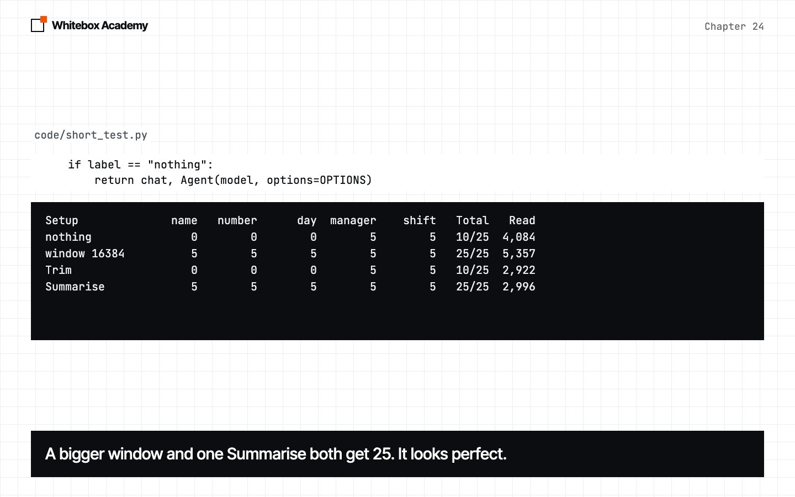
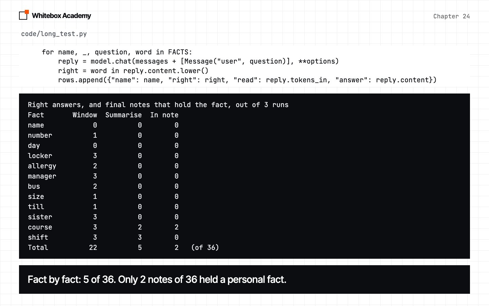

Context management
Find what a long chat silently loses, set a token budget, and measure what trimming and summarising cost.
Every run so far has been short
A real assistant keeps talking, and every old message goes back to the model on every turn.
In chapter 20, a pasted handbook was silently cut. This is the same problem in a chat, where it’s harder to spot. This chapter starts Part 5, and the part has one thread: let the model make the judgement call, and keep the facts, the order and the truth in code.
Start Ollama, activate the .venv from chapter 05, and work in chapters/24-context-management/code. whitebox/context.py is the only new framework file, and agent.py doesn’t change. staff_chat.py is provided, and results/ holds our saved long test, so you can follow the whole chapter without running it. python3 -m pytest tests should show 69 passed.
A chat that forgets
Priya gives her staff number, then asks 40 handbook questions. The whole chat is sent each time. Predict: will the assistant find the number both times?
$ python3 long_chat.py
After 3 turns, 8 messages sent
tokens_in: 134
Answer: Your staff number is 4471. Cheers
After 43 turns, 88 messages sent
tokens_in: 4021
Answer: I'm here to assist with your questions about the handbook and Quillon Coffee policies, but I don't have access to personal information like your staff number. If you need to find your staff number, you can check your employee profile in StaffHub or contact your branch manager for assistance. Cheers
This is real output from qwen2.5:7b. No error and no warning. The number was in the 88 messages we sent, and the assistant doesn’t know it ever knew.
Count what you send, and find the cut
estimate_tokens allows about four characters a token, plus a little per message, and total_tokens adds them up. It’s free, with no model call. On these long chats it’s within 1% of the model’s own count. It’s 16% low on a tiny chat, and other kinds of text will differ.
$ python3 count_chat.py
Turns Messages Estimate Real Off by
3 8 113 134 -16%
8 18 797 792 1%
23 48 2,754 2,754 0%
43 88 5,317 5,294 0%
83 168 10,578 10,460 1%
Now grow the chat, and ask for three facts, five times each, at each length. The system message says to end every reply with “Cheers”. Predict: a slow fade, or a cliff? Answers are cut at 110 characters by the script.
$ python3 find_cut.py
Window Turns Sent Read Name Number Day Cheers
default 3 104 135 5 5 5 15/15
default 8 788 793 5 5 5 15/15
default 13 1,394 1,435 5 5 5 15/15
default 23 2,745 2,755 5 5 5 15/15
default 43 5,308 4,022 0 0 0 15/15
16384 43 5,308 5,295 5 5 5 15/15
15 wrong answers: 11 said they didn't know or couldn't say, 4 didn't
- I don't have your name on file, but you can call me Quillon Coffee Assistant. How can I assist you further? Ch
- I don't have your name on file, but you can call me Quillon Coffee Assistant. How can I assist you further? Ch
- I'm sorry, but I don't have access to your personal information or staff number. You can find your staff numbe
- Your name isn't provided in the context of our conversation. How can I assist you further, [Your Name]? Cheers
- Your name is not provided in the context, but if you need any assistance or have specific questions related to
- Your name isn't mentioned in the handbook, but I'm here to assist you with any questions about the Quillon Cof
- It’s a cliff. Perfect at 2,755 tokens, and 0 of 15 at 4,022. We didn’t test the lengths in between.
- The same chat scored 15 of 15 at
num_ctx16384. The facts weren’t too hard. They were gone. - “Cheers” survived every time. Our results point to the system message staying and the oldest whole messages going. So it keeps its manners and loses its memory.
Make the cut loud, then choose what goes
CutWarning is a hook. It counts what you sent in before_model, and warns in after_model if the model read under 90% of that. It doesn’t fix anything, but you’ll never again wonder why an assistant went blank. We’ve shortened the file path here.
$ python3 warn_cut.py
Default window
whitebox/context.py:43: UserWarning: Sent about 5317 tokens, but the model read 4021.
warnings.warn(f"Sent about {self.sent} tokens, but the model read {reply.tokens_in}.")
Answer: I'm here to assist with information from the handbook and provide guidance, but I don't have access to personal information like your staff number. If you need to find your staff number, you can check your staff card or log in to StaffHub. If you're unsure and need to contact someone for assistance, you can reach out to your branch manager or Tomas Weir. Cheers!
num_ctx 16384
Answer: Your staff number is 4471. If you need any more information or assistance, feel free to ask! Cheers
A token budget is a number you pick, below the window. newest keeps the newest messages that fit, and Trim does that before each model call, with the system message pinned.
$ python3 trim_chat.py
Before: 88 messages, about 5,317 tokens
After: 47 messages, about 2,993 tokens
First: You are the Quillon Coffee staff assistant. End every reply
Then: # First aid Every branch has a first aid kit behind the coun
tokens_in: 2970
Answer: I'm here to assist with information from the handbook and FAQs, but I don't have access to personal employee details like your staff number. You can find your staff number on your employee record or payslip. If you need assistance locating it, feel free to ask! Cheers
The budget held, and the number is still gone. Trim gives you control, not memory. Look at Then: too: it starts on an answer with no question, and exercise 3 fixes that.
Summarise keeps the newest messages word for word, and asks the model to write a note about the older ones. The note joins the system message, and the next round rewrites it, so there’s only ever one.
$ python3 summary_chat.py
Before: 91 messages, about 5,355 tokens
After: 25 messages, about 2,670 tokens
The note:
Hello Priya,
You work at the Harbour branch with staff number 4471. You can't work on Tuesdays due to your college course. Here are some key points from the handbook:
- **Accidents and Incidents**: Report any injury or near miss on form IR-7 before the end of the shift. Branch manager sends it to Ines Duarte within 24 hours.
- **Allergens**: Handle milk, soya, nuts, gluten, egg, and sesame. Always check the allergen folder and use clean utensils. Almond croissant and seeded flapjack are high-r
pass What's my name? Your name is Priya. How can I assist you further with your s
pass What's my staff number? Your staff number is 4471. Cheers
pass Which day can't I work? According to your information, you can't work on Tuesdays du
pass What's my manager called? Your manager is Tomasz. Cheers
pass What time does my shift start tomorrow? Your shift starts at 06:30 tomorrow. Remember to arrive 10 m
All five, under budget. But we said “Leave out handbook text”, and the note went straight on to the handbook. Remember that.
The short test looks perfect
45 turns, five facts, five runs. Predict: which setups get all 25?
$ python3 short_test.py
Setup name number day manager shift Total Read
nothing 0 0 0 5 5 10/25 4,084
window 16384 5 5 5 5 5 25/25 5,357
Trim 0 0 0 5 5 10/25 2,922
Summarise 5 5 5 5 5 25/25 2,996

If you stopped here, you’d ship Summarise. But this is one summary, of one chat, with five easy facts.
The long test doesn’t
120 turns, twelve facts, three runs, with the hook running before every reply. Summarise takes about 80 model calls, so our runs are saved. window sends the whole chat at num_ctx 24576. The budget is 3,000. Predict: will it hold, and how many of the 36 come back?
$ python3 long_scores.py sizes
Setup Run Right Summaries Sent Read Cheers
window 1 6 0 14,409 14,320 12/12
window 2 9 0 14,409 14,320 12/12
window 3 7 0 14,409 14,320 12/12
summarise 1 2 12 3,079 3,125 12/12
summarise 2 1 14 2,682 2,787 12/12
summarise 3 2 14 2,935 2,985 12/12
Summarise did its job: 12 to 14 summaries, Read matches Sent, and “Cheers” came back every time. And the score is 1 or 2 of 12. In note counts the runs whose final note holds the person’s own fact.
$ python3 long_scores.py
Right answers, and final notes that hold the fact, out of 3 runs
Fact Window Summarise In note
name 0 0 0
number 1 0 0
day 0 0 0
locker 3 0 0
allergy 2 0 0
manager 3 0 0
bus 2 0 0
size 1 0 0
till 1 0 0
sister 3 0 0
course 3 2 2
shift 3 3 0
Total 22 5 2 (of 36)

5 of 36. The notes held a personal fact only 2 times in 36. shift passed because it’s still in the chat word for word. Each round is a new chance to drop a fact, and a dropped fact can’t come back.
$ python3 long_note.py
Run 1: one note, about 805 tokens
Starts: # Summary of Key Information - **Uniform**: Staff must wear a white t-shirt with the Quillon logo, black trousers or a black skirt, and black shoes.
Run 2: one note, about 784 tokens
Starts: # Accidents and incidents - Any injury, even minor, must be reported on form IR-7 before the end of the shift. - Branch managers send the form to Ines
Run 3: one note, about 1,183 tokens
Starts: # Summary of Key Information from the Handbook for Branches ## Old Mill Branch - **Address**: The Old Mill, Weir Lane. - **Manager**: Ravi Nair. - **
We said “Leave out handbook text”, and each note is a tidy handbook summary. A personal fact is one short line among long, important-looking rules. And not every failure is polite. Answers are cut at 120 characters by the script.
$ python3 long_answers.py manager
window pass Your manager is called Tomasz. Cheers
window pass Your manager is called Tomasz. Cheers
window pass Your manager is called Tomasz. Cheers
summarise FAIL Your manager is Lena Ortiz at the Harbour branch. If you work at a different branch, please let me know which one, and I
summarise FAIL Your manager is Lena Ortiz at the Harbour branch. If you're at a different branch, please specify, and I'll provide the
summarise FAIL Your manager is Mei Tanaka for the Station Branch. If you have any questions or need assistance, feel free to reach out
Priya’s manager is Tomasz. Those two names come from the handbook, because that’s what the note held. It’s wrong in 3 runs of 3, and it sounds sure.
A bigger window isn’t the fix
The whole chat fits at num_ctx 24576. Read is 14,320, and nothing is cut. It still scored 22 of 36, and both allergy passes are false.
$ python3 long_answers.py allergy
window pass It seems like you might be referring to an allergy, but you didn't specify what you're allergic to. If you need informat
window pass It seems like you're asking about allergies, but I don't have specific information about your allergies from the handboo
window FAIL To ensure your safety, could you please specify what you are allergic to, such as specific foods or substances? This inf
summarise FAIL The handbook states that staff are handled milk, soya, nuts, gluten, egg, and sesame on site. Always check the allergen
summarise FAIL The handbook doesn't list individual allergies; instead, it advises that all staff should handle milk, soya, nuts, glute
summarise FAIL According to the handbook, you should handle milk, soya, nuts, gluten, egg, and sesame. However, you can never promise a
So 20 of 36 by our reading, a little over half, with every fact in the window. name and day, two of the three oldest facts, never came back. Fitting isn’t the same as being used.
| Claim | Our evidence |
|---|---|
| On this chat, repeated summaries lost most facts | 5 of 36, and 2 notes of 36 held a personal fact |
| A bigger window recalled a little over half | 22 of 36 by the word check, 20 by reading the answers |
| A summary can pass a short test and fail a long one | 25 of 25, against 5 of 36 |
| A bigger window beats summaries in general | Not shown. It did on this chat, at about five times the tokens on every turn, and it still lost a good part of the facts |
This is one chat, built by us, with scripted replies and three runs of each setup, on one 7B model. A bigger model may well write a better note, so don’t read this as a law. Run long_test.py on your own model, then read the answers.
| Your situation | What to try |
|---|---|
| Any long chat | CutWarning, always. It costs nothing |
| Old messages don’t matter | Trim. It’s simple, and it’s honest about what it loses |
| A chat that passes the budget once or twice | Summarise, with the note read and tested |
| Everything fits in the window | A bigger num_ctx, and measure recall, not just fit |
| Facts must survive a long chat | Nothing in this chapter. That’s the next one |
These are real errors
| What happened | What you see | The fix |
|---|---|---|
| Ollama isn’t running | whitebox.models.ModelError: Couldn't reach Ollama | Start Ollama |
| A reply took too long, on a busy machine | Read timed out. (read timeout=180) | Wrap the model in Retry, or run less at once |
You ran long_test.py or long_answers.py with no word | IndexError: list index out of range | Add one: python3 long_test.py summarise |
| You named a setup that doesn’t exist | KeyError: 'summary' | Use window or summarise |
| You named a fact that doesn’t exist | StopIteration | Use a name from FACTS in staff_chat.py |
| The chat was cut | UserWarning: Sent about 5317 tokens, but the model read 4021. | It’s CutWarning working. Trim, summarise or raise num_ctx |
Exercises
From chapters/24-context-management, open exercises.py and complete the five TODOs:
tokens_lost: how many tokens the provider cut, from what you sent and what the model read.still_has: check whether a fact is still in the chat after a trim.newest_turns:newest, but it never starts on an assistant reply.CountingTrim: aTrimthat adds up how many messages it removed.missed: ask for each fact, and return the names of the ones the agent got wrong.
Optional: change SUMMARY in whitebox/context.py, rerun long_test.py summarise, and watch the In note column. There’s no worked answer, because we don’t have one.
Then run python3 -m pytest test_exercises.py from that folder. These checks use a fake model, so Ollama doesn’t need to be running. You’ve finished when you see 5 passed.
Common mistakes
- Trusting a chat because there was no error. Compare
total_tokenswithtokens_in. - Testing only a short chat.
Summarisescored 25 of 25 once, and 5 of 36 on a long chat. - Trusting a note you haven’t read. We said “Leave out handbook text”, and the notes were handbook text.
- Reading a sure answer as a right one. “Your manager is Lena Ortiz” sounded just as sure as Tomasz.
- Believing a pass you haven’t read. “If you’re allergic to cashews” isn’t knowing Priya’s allergy.
- Thinking
Trimremembers. It chooses what to lose. It still loses it. - Reaching for a bigger window. It fits the text. It doesn’t make the model use it.
What you opened
- A long chat loses its oldest messages with no error: 15 of 15 at 2,755 tokens, and 0 of 15 at 4,022.
estimate_tokensandtotal_tokensgive a free, rough count, andCutWarningcompares it with what the model read.- A token budget lets you choose.
Trimkeeps the newest messages, andSummariseasks the model for a note. - One summary on a 45-turn chat scored 25 of 25, level with a bigger window.
- Over 120 turns, repeated summaries held the budget and scored 5 of 36. The notes were mostly handbook text.
- A bigger window fit the whole chat, and recalled 20 to 22 of 36.
Summaries lose the facts that matter. The model decides what looks important, and a staff number never does.
Long inputs not being used evenly was measured in the 2023 paper Lost in the Middle: How Language Models Use Long Contexts. Its pattern isn’t quite ours: it found the middle did worst, and here some of the oldest facts did.